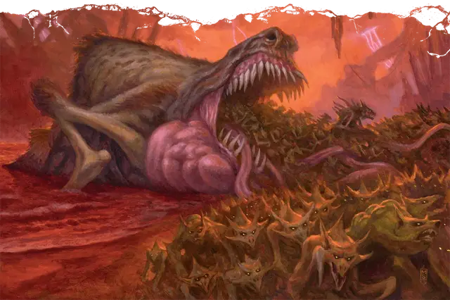

Крокек’тоик
Crokek'toeck
Громадное Исчадие (Демон), хаотично-злое

Класс Доспеха 15 (природный доспех)
Хиты 297 (17к20 + 119)
Скорость 60 футов, плавая 60 футов
| мод | спас | ||
|---|---|---|---|
| СИЛ | 28 | +9 | +9 |
| ЛОВ | 10 | +0 | +0 |
| ТЕЛ | 24 | +7 | +12 |
| мод | спас | ||
|---|---|---|---|
| ИНТ | 6 | −2 | −2 |
| МДР | 10 | +0 | +5 |
| ХАР | 13 | +1 | +1 |
Сопротивление урону огонь, холод, электричество; дробящий, колющий, рубящий от немагических атак
Иммунитет к урону яд
Иммунитет к состояниям испуг, отравление, очарование
Чувства тёмное зрение 120 футов, пассивное Восприятие 10
Языки Бездны
Опасность 14 (11500 опыта)
Бонус мастерства +5
Особенности
Язык. Крокек’тоик понимает язык Бездны, но не говорит.
Амфибия. Крокек’тоик может дышать и на воздухе и под водой.
Сопротивление магии. Крокек’тоик совершает с преимуществом спасброски от заклинаний и прочих магических эффектов.
Магическое оружие. Атаки крокек’тоика являются магическими.
Надёжная память. Крокек’тоик невосприимчив к водам реки Стикс и прочим эффектам, которые отнимают или меняют воспоминания, либо обнаруживают или читают его мысли.
Прыжок с места. Крокек’тоик совершает прыжки в длину на расстояние до 60 фт. и прыжки в высоту на расстояние до 30 фт., хоть с разбегом, хоть без него.
Действия
Укус. . Рукопашная атака оружием: +14 к попаданию, досягаемость 15 фт., одна цель. Попадание: 44 (10к6 + 9) колющего урона.
Изрыгание союзников (перезарядка 6). Крокек’тоик открывает пасть и изрыгает 1к4 барлгуры [barlgura] или 3к6 гнолл [gnoll] во главе с 1 клыком Йеногу [gnoll fang of Yeenoghu], или 6к6 дретчей [dretch], или 1к3 врока [vrock]. Каждое изрыгнутое существо появляется в свободном пространстве в пределах 30 футов от пасти Крокек’тоика или в следующем ближайшем свободном пространстве.
Описание
Демон-питомец Йеногу напоминает гигантского илистого прыгуна, только с зубами, шерстью, ушами и смехом гиены. Этот уникальный демон способен держать в брюхе демонов поменьше и изрыгать их, где велит Йеногу. Крокек’тоик невосприимчив к лишающему разума воздействию реки Стикс, а потому его часто используют для перевозки демонов (порой даже самого Йеногу) через жуткие стигийские воды.